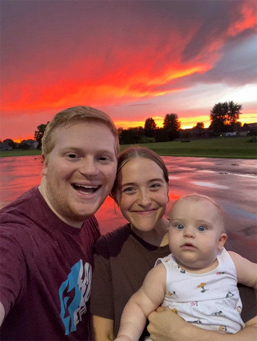
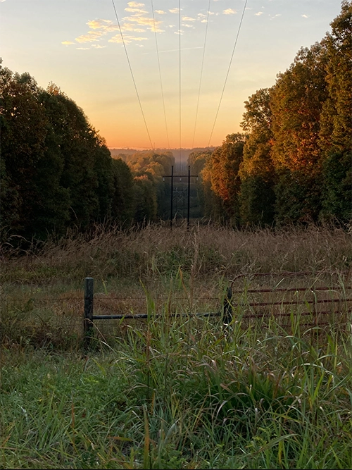

<!doctype html>
<html lang="en"></html>
    <head>
        <title>HTML Challenge 1</title>
    </head>
    <body>
        <h1>Rachel Betten</h1>
        <figure>
            
            <figcaption> Robert (my husband), me, and Mya (our daughter).</figcaption>
        </figure>
        <h2>Where I'm From</h2>
        <figure>
            
        <p>I was born and raised in Indianapolis, Indiana as the middle of five children. I grew up amongst firefly-filled cornfields in June, mesmerizing sunsets across a wide sky, kind Hoosier hospitality, and a huge basketball culture. There are some parts of Indiana I have never been fond of, such as the lack of mountains, the intense humidity, and small amount of easily accessable outdoor activities. I have enjoyed living in Utah with my little family for the past few years where we can hike, backpack, boat, and swim in a beautiful and diverse landscape.</p>
        </figure>
        <hr>
        <h2>How I Got Here</h2>
        <p>I came to BYU with the intention of joining the Illustration program. However, I quickly realized that it wasn't exactly what I was looking for. I switched between a few very different majors over the next couple of years, including graphic design, food science, and dietetics. I realized that graphic design was more aligned with my interests, but became pregnant and very sick in 2023. I took a break for 2 years while pregnant and staying home with our daughter, but also worked as a graphic designer for a small e-commerce company full-time. I LOVED it! They taught me some product design too, so I looked into the Tech and Engineering major as a way to gain more education surrounding both technology and design. This is my first semester back in school and I've never been more eager to be involved in a major.</p>
        <hr>
        <h2>Where I Am Going</h2>
        <p>Someday, I want to become a full-time graphic designer. I hope to gain a lot of experience helping a company with branding or typical graphic design responsibilities. I also would be interested in continuing my education with a masters in outdoor product design where I could design outdoor gear. I would love to do some freelance graphic design while raising my children after my bachelor's degree.</p>
        <hr>
        <h3>Playlist for My Life</h3>
            <ul>
                <li><strong>The Less I Know the Better</strong> -<em>Tame Impala</em></li>
                <li><strong>Undressed</strong> -<em>Sombr</em></li>
                <li><strong>The Adults Are Talking</strong> -<em>The Strokes</em></li>
                <li><strong>Lemon Tree</strong> -<em>Post Malone</em></li>
                <li><strong>Zombie</strong> -<em>The Cranberries</em></li>
                <li><strong>Intergalactic</strong> -<em>Beastie Boys</em></li>
            </ul>
        <hr>
        <blockquote>
            "For the last time, we did not order a giant trampoline!" -<em>That one guy in The Emperor's New Groove</em>
        </blockquote>
    <h3><small>&copy; Copyright &#9679; Rachel Betten &#127939;</small></h3>

    </body>